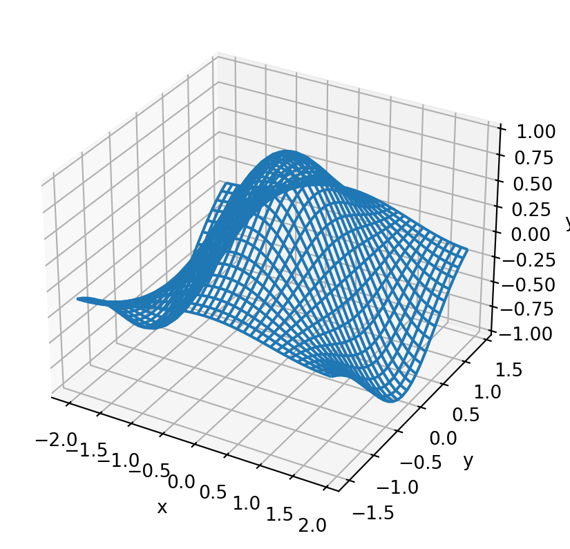

In this chapter you will learn how to plot functions of more than one variable \(F(x,y)\). Functions like this can be visualized by making a contour plots (like a topographic map) or by displaying the function value as height above the \(x-y\) plane like a perspective drawing. You can also display vector-valued function \(\mathbf{F}(x,y)\) using vector field plots.
12.1 Making 2-D Grids
When plotting a function of one variable, recall that the first step was to use linspace or arange to construct a grid of points spanning the domain of the function. For a function of two variables the domain is two-dimensional and hence the grid will also need to be two-dimensional. In other words, we need to construct a set of x-y pairs the spans the two-dimensional domain. We can do this using numpy.meshgrid and numpy.mgrid. Let’s see an example and then explain the pieces. Below you will find some code to plot the function: \[f(x,y) = \cos({\pi \over 2} x) \exp(-y^2)\] (see the code comments)
from numpy import arange,meshgrid,cos,exp,pi,mgridfrom matplotlib import pyplotfrom mpl_toolkits.mplot3d import Axes3D #<- You need this to make 3D plots# Define the arrays x and y# Don't make the step size too small or you will kill the# system (you have a large, but finite amount of memory)x=arange(-2,2,0.1)y=arange(-2,2,0.1)# Use meshgrid to convert these 1-d arrays into 2-d matrices# of x and y values over the planeX,Y=meshgrid(x,y)#X,Y=mgrid[-1:1:0.1,0:1.5:0.1] # You could also do this in place of meshgrid# Get F(x,y) by using F(X,Y).# rather than with x and yF=cos(pi/2*X)*exp(-Y**2)# Plot the functionfig = pyplot.figure()ax=fig.gca(projection='3d')ax.plot_surface(X,Y,F)pyplot.xlabel('x')pyplot.ylabel('y')pyplot.show()
To Do:
Print out X and Y and inspect the output until you understand what meshgrid does.
Replace the function in the cell above with one of your choosing.
Let’s break down this block of code one piece at a time. First, notice that anytime you want a 3 dimensional plot, you will need the following lines:
from mpl_toolkits.mplot3d import Axes3D #<- You need this to make 3D plotsfig = pyplot.figure() # Create the figure objectax=fig.gca(projection='3d') # Set the axes to be 3 dimensional
Next, meshgrid turns the one-dimensional arrays x and y into two-dimensional arrays X and Y. As an example, inspect the output from the cell below:
from numpy import meshgridx = [1,2,3]y = [4,5]X,Y = meshgrid(x,y)print(X)print(Y)
[[1 2 3]
[1 2 3]]
[[4 4 4]
[5 5 5]]
These two arrays provide a set of x-y coordinate pair that span the domain, as illustrated in the figure.
meshgrid
Numpy also has a command called mgrid which is similar to meshgrid but does the conversion to two dimensions the other way around. As an example, inspect the output in the cell below.
Examine all three sets of output from the cell above until you understand the differences.
What happens when you add a third argument to mgrid?
What happens if the third argument is imaginary (i.e. 10j)?
All three-dimensional plots will require that you first use meshgrid or mgrid to generate a grid over the two-dimensional domain.
12.2 Surface Plots
You’ve already seen an example of a surface plot above. A similar plot can be generated by replacing plot_surface with plot_wireframe. This plot looks similar to the surface plot shown above. See the cell below for an example.
from numpy import arange,meshgrid,cos,exp,pi,mgridfrom matplotlib import pyplotfrom mpl_toolkits.mplot3d import Axes3D #<- You need this to make 3D plotsx=arange(-2,2,0.1)y=arange(-1.5,1.5,0.1)X,Y=meshgrid(x,y)F=cos(pi/2*X)*exp(-Y**2)fig = pyplot.figure()ax=fig.gca(projection='3d')ax.plot_wireframe(X,Y,F)pyplot.xlabel('x')pyplot.ylabel('y')pyplot.show()

12.3 Contour Plots
Python generates contour plots very similarly to surface plots. Instead of using plot_surface or plot_wireframe, the function contour is used. Look at the example below.
from numpy import arange,meshgrid,cos,exp,pi,mgridfrom matplotlib import pyplotfrom mpl_toolkits.mplot3d import Axes3D #<- You need this to make 3D plotsx=arange(-2,2,0.1)y=arange(-1.5,1.5,0.1)X,Y=meshgrid(x,y)F=cos(pi/2*X)*exp(-Y**2)fig = pyplot.figure()ax=fig.gca(projection='3d')ax.contour(X,Y,F)pyplot.xlabel('x')pyplot.ylabel('y')pyplot.show()
12.3.1 The levels keyword argument
The keyword argument levels can be added to the function call to specify which (or how many) contours are displayed. If levels = n where n is an integer, the contour function will plot n contours. If levels = [a,b,c] then the contour function will lines of constant value equal to the values specified. The code block below gives a few examples.
from numpy import arange,meshgrid,cos,exp,pi,mgridfrom matplotlib import pyplotfrom mpl_toolkits.mplot3d import Axes3D #<- You need this to make 3D plotsx=arange(-2,2,0.1)y=arange(-1.5,1.5,0.1)X,Y=meshgrid(x,y)F=cos(pi/2*X)*exp(-Y**2)fig = pyplot.figure()ax=fig.gca(projection='3d')ax.contour(X,Y,F,levels =5)pyplot.xlabel('x')pyplot.ylabel('y')pyplot.show()
from numpy import arange,meshgrid,cos,exp,pi,mgridfrom matplotlib import pyplotfrom mpl_toolkits.mplot3d import Axes3D #<- You need this to make 3D plotsx=arange(-2,2,0.1)y=arange(-1.5,1.5,0.1)X,Y=meshgrid(x,y)F=cos(pi/2*X)*exp(-Y**2)fig = pyplot.figure()ax=fig.gca(projection='3d')ax.contour(X,Y,F,levels = [-0.5,0.25,0.75])pyplot.xlabel('x')pyplot.ylabel('y')pyplot.show()
12.4 Vector-Field Plots
In electricity and magnetism you’ll encounter functions that produce a vector (\(\mathbf{F}(x,y)\)) instead of a number(\(F(x,y)\)) like you may be used to. In other words, instead of associating a number with every (x,y) pair, a vector \((f_x,f_y)\) is associated with each pair. You can plot a vector field using the quiver function, which takes four required arguments. The first two are the output from meshgrid just as with the other plots we have done. The third and fourth arguments are the components of the vectors at each (x,y) pair. Below is an example of how to plot the following vector-valued function \[\mathbf{B} = (-y/(x^2 + y^2),x/(x^2 + y^2))\]
from numpy import arange, meshgrid,sqrt,logfrom matplotlib import pyplotx = arange(-5.25,5.25,0.5) # define the x and y grids (avoid (0,0))y = arange(-5.25,5.25,0.5) # define the x and y grids (avoid (0,0))X,Y=meshgrid(x,y)# Magnetic field of a long current-carrying wireBx=-Y/(X**2+Y**2)By=X/(X**2+Y**2)# make the field arrow plotpyplot.figure()pyplot.quiver(X,Y,Bx,By)pyplot.axis('equal') # make the x and y axes be equally scaledpyplot.title('B of a long current-carrying wire')pyplot.show()
Often, the lengths of these vectors will be large and that makes it hard to look at the graphic. One option for improving this is to force all of the vectors to have length \(1\) and then color the vector according to the true length. To set the color of the arrows, add a fifth argument to the function that contains the vector lengths. You can then add the keyword argument cmap to specify the color spectrum to use. My favorite is gist_rainbow but there are other here.
from numpy import arange, meshgrid,sqrt,logfrom matplotlib import pyplotx = arange(-5.25,5.25,0.5) # define the x and y grids (avoid (0,0))y = arange(-5.25,5.25,0.5) # define the x and y grids (avoid (0,0))X,Y=meshgrid(x,y)# Magnetic field of a long current-carrying wireBx=-Y/(X**2+Y**2)By=X/(X**2+Y**2)B = sqrt(Bx**2+ By**2) # Find the magnitude of the vectors.# make the field arrow plotpyplot.figure()pyplot.quiver(X,Y,Bx/B,By/B,B,cmap="gist_rainbow") # Divide by magnitude to make them equal to 1pyplot.axis('equal') # make the x and y axes be equally scaledpyplot.title('B of a long current-carrying wire')pyplot.show()
12.5 Animations
Often you will want to see how a plot evolves over time. Maybe you are plotting the waveform on a string and you want to see how it changes in time. Animations can be built by repeatedly constructing a new plot and then waiting before you clear the canvas and plot again. Look at the example below to see how to do this:
from numpy import arange,sin,cosfrom matplotlib import pyplot%matplotlib inlinet=0x = arange(0,5,0.01) #Domain over which I want to plot the function.while t <10: y=sin(5*x-3*t)*cos(2*x) #Constructarrayoffunction# values at current time. pyplot.clf() # Clear the canvas, otherwise all plots end up on# top of each other pyplot.plot(x,y,'r-',linewidth=3) pyplot.xlabel('x') pyplot.ylabel('f(x)') pyplot.title('t = {:.4f}'.format(t)) pyplot.draw() pyplot.pause(0.01) t +=.1# draw the plot, but don't wait for# someone to close the window.# Wait before plotting the next one.# Advance time.
12.6 Flashcards
Describe the use and output of meshgrid.
What is the difference between meshgrid and mgrid?
What are the three lines of code that must be included if you are building a three-dimensional plot?
What is the difference between plot_surface and plot_wireframe?
What does the levels keyword argument do when making a contour plot? (What possible values can this argument take?)
What is a vector-field plot and how do you generate one in python?
What keyword argument controls the color of the vectors in a vector-field plot?
Where can you find the parable of the laborers in the vineyard?
12.7 Exercises
Plot the following function from \(-5 < x,y < 5\)\[ f(x,y) = {\sin (x y)\over x^2 + y^2}\]
# Python code here
Make a contour plot of the function from problem 1. The contours you plot should be where \(f(x,y) = -0.25, 0, 0.25\).
# Python code here
The range of a projectile launched on level ground is given by: \[ R = {v_i^2 \sin(2 \theta)\over g}\] where \(v_i\) is the launch speed, \(\theta\) is the launch angle, and \(g = 9.8\) m/s\(^2\) is the acceleration due to gravity. Plot \(R(v_i,\theta)\) for \(0 < v_i < 50\) m/s and \(0 < \theta < 90^\circ\). Now write a single sentence summarizing the results of the plot.
# Python code here
(Extra Credit) The angle of impact for a projectile launched with initial speed \(v\), launch angle \(\theta\), and initial height \(y_i\) is given by: \[ \phi = \tan^{-1} \left( {\sqrt{v^2 \sin^2\theta + 2 g y_0} \over v \cos \theta} \right) \] Plot the impact angle as a function of \(v\) and \(\theta\) (\(\phi(v,\theta)\)) for \(0 < v_i < 50\) m/s and \(0 < \theta < 90^\circ\) and \(y_i = 10\) m. Then write a single sentence summarizing the results of the plot.